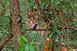
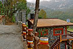

“We welcome you to experience the old-world charm of India’s colonial era, at our 19th century home in the Himalayas of Kumaon. We strive to keep alive the heritage of the Himalayas, our old colonial family recipes, and our family’s love of the surrounding wilderness, and hope to give you a glimpse of life in the times gone by!”
~Paddy Smetacek, host at Smetaceks’ Colonial Homestay in Bhimtal
Please email us at untravel@indiauntravelled.com to plan and book your travels.
The Smetacek family has a fascinating history; in the 1930s, Frederick Smetacek fled the Nazis and managed to board a ship sailing to India. He established himself as a successful businessman in Calcutta, where he married Shaheda Ahad, a descendant of famous warrior-king Tipu Sultan! They moved their family to the hills of Kumaon, bought a chunk of land on Jones Estate (a property spanning over a thousand acres, owned by the then magistrate, Colonel Jones), and started a holiday retreat to welcome diplomats from around the world. Their descendants now welcome travellers with the same warmth and love into the old-world charm of the original Smetacek family home.
Bhimtal can look like an unattractive town at first glance; concrete construction lines the beginning of the slopes past the shores of Bhimtal Lake. However, once you drive past these initial deterrents, the Himalayas unveil a quaint hill station lined by charming mountain homes, surrounded by lush forests, and home to fascinating wildlife and local legends. Through these forests, you can stroll to the famous Methodist church of Sat Tal Christian Ashram Estate, the terraced farms in the valley below, and further to the pristine lakes of Sat Tal for an afternoon dip and picnic lunch.
Wildlife enthusiasts and birdwatchers can spend hours in these ancient forests of cedar, oak and pine, spotting langurs, monkeys, deer, porcupines, peacocks, and various species of birds and butterflies; leopards, though much more elusive, have been spotted in the region by a lucky few! Adventure lovers can hike the lesser-known trails with the Smetacek boys, who have grown up in these mountains and among its wildlife. Or you can just lie back in the comfort of your colonial retreat, indulge your taste buds in the sumptuous colonial recipes of the house, and let your charming hostess fascinate you with her tales of yore.
Please email us at untravel@indiauntravelled.com to plan and book your travels.


The Smetaceks’ family home retains its colonial, old-world charm, with its original mud-and-stone walls, 19th century glass panes in the doors, wood and tin roof, antique furniture, and ancient knick-knacks. The family makes every effort to preserve the forests and wilderness at and around the estate.
Accommodation is provided in three comfortable bedrooms, all of which have rustic lime-washed mud-plastered walls that keep the rooms warm even in winter, wooden ceilings, antique paraphernalia, and attached (western-style) spacious bathrooms. Of the three rooms, one is a double bedroom with a sitting area, while the other two are family rooms – double bedrooms with a large annexe to comfortably accommodate four adults.
The windows of the rooms overlook the wilderness that surrounds the home, and you can wake up to the sweet chirping of birds and even spot a pheasant or deer in the backyard in the early mornings.
The common lounge area of the house features a sitting area around an old fireplace, complete with books and antique décor that has been in the family for generations. The outdoor sit-outs are great for relaxing in the sounds of nature.
Please email us at untravel@indiauntravelled.com to plan and book your travels.
Food
 Paddy is an excellent cook, and preserves colonial recipes that have been in the family for a long time! Indulge in her home-cooked Continental or Indian fare, both of which comprise sumptuous vegetarian and non-vegetarian dishes prepared with locally grown or sourced ingredients.
Paddy is an excellent cook, and preserves colonial recipes that have been in the family for a long time! Indulge in her home-cooked Continental or Indian fare, both of which comprise sumptuous vegetarian and non-vegetarian dishes prepared with locally grown or sourced ingredients.
Breakfast is served in the verandah overlooking the garden, and typically consists of home-baked breads, buns and rolls fresh from the old Italian oven, served with home-made fruit jams, forest honey, and healthy spreads made with herbs from the garden. Made on request are apple pancakes, fruit crepes, and mushroom, cheese, herb or even jam omelettes!
Lunch and dinner can range from traditional Indian dishes served with hot chapattis or rice, to continental dishes like fresh salads, pastas and baked vegetables, to barbeque dinners with jacket potatoes, barbequed snacks, pizza pockets, and herb and cheese cutlets. Remember to leave space for one of Paddy’s innovative and mouth-watering desserts.
If you intend to spend the afternoon hiking in the wilderness or swimming in the lakes of Sattal, opt for a packed picnic lunch with pocket sandwiches, eggs, and seasonal fruits and berries – just what you need to complete a day out in the majesty of the Himalayas.
Please email us at untravel@indiauntravelled.com to plan and book your travels.

{kind=link}
{kind=link}
{kind=link}
{kind=link}
{kind=link}
{kind=link}
{kind=link}
{kind=link}
{kind=link}
{kind=link}
{kind=link}
{kind=link}
{kind=link}
Activities
You can while away your days at Bhimtal with hikes, treks, jungle walks, swimming, day trips to nearby hill stations, or you can lie back with chai and conversation, spot birds, go on long countryside strolls, indulge in picnic lunches, and rejuvenate in the bounty of nature. Give yourself time to read, write, paint, draw, and everything else you always want to do but never get time for.
Activities at and around the homestay include:
- Village walk and meal in a nearby village
- Walk to the rice paddies, wheat and potato farms at the base of the mountain
- Jungle walk to the church of Sat Tal
- Birdwatching and wildlife spotting in the forest (or at home)
- Hike to Panna Tal, a pristine lake of Sattal, for swimming and picnic lunch
- Hike to NalDamyanti Tal, with sacred mahseer fish, a temple with an ancient
- Mahavishnu idol discovered in the lake bed during dredging a century ago, and a 100-year-old water driven flour mill
- Trek to nearby hills for majestic views of snow-capped Himalayan peaks
- Pick tea from the Orange Pekoe tea bushes, planted by the British in the 1850s
- Outdoor barbeque dinners with bonfire
- Cooking classes on prior request
- Day trips to Nainital, Ramgarh, Ranikhet, and other nearby hill stations
Please email us at untravel@indiauntravelled.com to plan and book your travels.
- Forest walk
- Hike through the forest for a swim in these waters
- Locals in the forest
- Spot birds, monkeys, langurs, porcupines, peacocks and deer in the forest
- Stroll along the farms of Bhimtal
- The Bhimtal Lake in the monsoon
- The mountain homes of Bhimtal
- View of the Sattal lake on the hike from Bhimtal
- Walk to the quaint church of Bhimtal
{kind=link}
{kind=link}
{kind=link}
{kind=link}
{kind=link}
{kind=link}
{kind=link}
{kind=link}
{kind=link}
Rooms at the Smetaceks' Colonial Homestay are priced as follows, per night:
Double Room: INR 3500* + GST for two adults
Including breakfast, morning and evening tea/coffee with biscuits
Extra adult (12 years and above): INR 1750 + GST
Including breakfast, morning and evening tea/coffee with biscuits
Extra child (2- 12 years): INR 750 + GST
Including breakfast, morning and evening tea, small snacks,
Solo Traveller: INR 3000* + GST
Including breakfast, morning and evening tea/coffee with biscuits
*Costs are higher on long weekends and premium dates.
Meals
Lunch and DinnerVegetarian:₹ 600 per adult per meal, ₹300 for children.
Non-vegetarian:₹ 650 per adult per meal, ₹ 325 for children
Pickup(from Kathgodam railway station): INR 700-800.
Please email us at untravel@indiauntravelled.com to plan and book your travels.
Location
The Smetaceks' Colonial Homestay is located on a hillock in Bhimtal; the closest railway station and bus stop is at Kathgodam (about 21 kms or one hour by taxi). Pickup can be arranged on prior request.
The nearest domestic airport is at Jolly Grant (near Dehradun), and the nearest international airport is in Delhi.
Best time to visit
Bhimtal has pleasant weather all year round, and is a great place to cool off in the summer or monsoon seasons. The snow-capped Himalayas are visible in winter, from end October until late February. Autumn, right through November, is excellent, as is Spring (March-April). Winter mornings and nights are cold (if you're lucky, you might even get to experience snowfall!), while afternoons are warm and sunny.
Things to note
- Fitness: Average level of fitness is recommended to be able to enjoy the walks surrounding the homestay.
- Cash and ATMs: Only cash is accepted at the homestay. ATMs are located 2 km away.
- Bathrooms: Each room comes with an attached bathroom, running hot water and western style toilets.
- Electricity: Power cuts are infrequent, but please be prepared for them by carrying torches and spare batteries as needed.
- Phone, Internet and TV: There are no TVs in the rooms, but plenty of natural beauty and interaction with the host family to keep you entertained. Most phone networks work well and free Wifi is available in the house.
- Pets: Allowed on prior request. INR 250 per pet per day.
- Alcohol: Not provided. You can carry your own on prior request.
Checklist
- Warm clothes if you're travelling in winter
- Sunscreen
- Walking shoes
- Books to read and write, stationery to paint and draw, basically anything you love to do and never get the time for
- Binoculars for bird watching
- Cosmetics you need
- Prescription medicines, if any
- Camera & batteries / charger
Please email us at untravel@indiauntravelled.com to plan and book your travels.
Photo Gallery
- Bonfire in the evenings
- Hacienda flowers in bloom on the way
 Overview of the Smetacek's Colonial Retreat
Overview of the Smetacek's Colonial Retreat- Pristine lakes of Sattal, a short forest hike away
 The farms of Bhimtal
The farms of Bhimtal- The quaint English church of Bhimtal
- Antique paraphernelia in the rooms
- At dusk
- Attached western style bathrooms
- Bedrooms retain the mud walls, high ceilings and wooden roofs
- Bedrooms with colonial interiors
- Front verandah to lounge in on a warm winter afternoon
- The cosy lounge area
- Breakfast with a view of the wilderness
 Freshly baked scones
Freshly baked scones- Homemade jams
- Forest walk
- Hike through the forest for a swim in these waters
- Locals in the forest
- Spot birds, monkeys, langurs, porcupines, peacocks and deer in the forest
- Stroll along the farms of Bhimtal
- The Bhimtal Lake in the monsoon
- The mountain homes of Bhimtal
- View of the Sattal lake on the hike from Bhimtal
- Walk to the quaint church of Bhimtal
Please email us at untravel@indiauntravelled.com to plan and book your travels.
“We indeed had a wonderful time in the homestay in Bhimtal. Smetacek’s family were just lovely and they took a great care of us.
We did enjoy the trip to the fullest and ended up staying another night.
We would love to explore more properties of yours.”
~ Suraj Dhingra, visited in May 2016
“We had a super time at the homestay. We loved chatting with Paddy and her food. I can say that this was the best homestay experience we've ever had. Paddy's staff are also great people and they really took great care.
Hope to go back soon.”
~ Kumkum Dasgupta, travelled in June 2015
“Everything about our Bhimtal stay was wonderful. Paddy is such an interesting person and a terrific host. Good conversation, reading, lots of walking and some swimming kept us busy but relaxed.”
~ Judith and Paul, travelled in September 2014.
“To make a long story short, we had the best time of our whole time in India. Paddy and the crew are so nice. We had so much fun and will be going back again for sure.”
~ Joshua and Alicia, travelled in March 2014
To feature your review / testimonial, please write to untravel@indiauntravelled.com.
Please email us at untravel@indiauntravelled.com to plan and book your travels.
Over the years, the Smetacek family has tried to preserve their colonial way of life in the Kumaon Himalayas. The Smetaceks’ Colonial Homestay retains its original colonial character, with its thick mud walls, wooden ceilings, antique furniture, and family collectibles. Efforts are made to grow or source vegetables and herbs locally, and cook using traditional family recipes.
A concentrated effort is made by the family to conserve the forests and wildlife of the surrounding region, by engaging locals on the importance of saving trees and not hunting wild animals, and even personally fighting forest fires.
Below are some tips to travel responsibly while in Bhimtal:
- Carry a good water bottle. Filtered water is available at the house for refilling your bottle. Refrain from buying numerous plastic mineral water bottles.
- Pack your bags with environmentally friendly things. Carry as little plastic as possible.
- Do not litter or leave behind any non-biodegradable waste. Carry it to the cities where better waste management systems are in place.
- What you wear has an impact – environmentally and culturally – dress appropriately, especially when you visit the nearby villages.
- Respect the local culture and refrain from physical intimacy in public places.
- Local food is great. Try it as much as possible and avoid packaged food. Ask for modifications in the food according to your taste, instead of wasting it.
- Avoid excessive consumption of alcohol and refrain from drugs, especially in public places.
- Seek permission before photographing people, so as to respect their privacy.
- Do not pluck any plants & flowers, and do not disturb the wildlife.